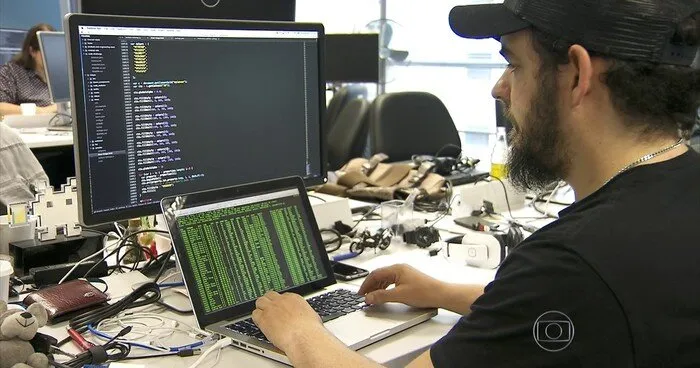

Julio - Ciber Segurança
-
Um profissional de cibersegurança como o Julio geralmente possui um conjunto de habilidades técnicas
e comportamentais muito específico:
- Perfil Analítico e Investigativo Ele costuma ser uma pessoa detalhista. No dia a dia, ele analisa padrões de tráfego de rede para identificar anomalias que possam indicar uma invasão. Ele pensa como um atacante para conseguir antecipar as vulnerabilidades de uma empresa.
- Áreas de Atuação Dependendo da especialidade, o Julio pode trabalhar em frentes diferentes: Blue Team (Defesa): Focado em monitorar sistemas, configurar firewalls e responder a incidentes em tempo real. Red Team (Ofensiva): Atua realizando testes de invasão (pentests) autorizados para encontrar falhas antes que criminosos as encontrem. Compliance e Governança: Garante que a empresa siga leis de proteção de dados, como a LGPD no Brasil ou o GDPR na Europa.
- Rotina e Ferramentas A rotina dele envolve o uso de ferramentas complexas para criptografia, análise de vulnerabilidades e forense digital. É comum que ele precise lidar com situações de alta pressão, especialmente durante ataques de ransomware ou vazamentos de dados, onde cada minuto é crucial para minimizar danos.
- Mentalidade de Aprendizado Contínuo Como a tecnologia e as táticas dos cibercriminosos evoluem diariamente, o Julio precisa estudar constantemente. Ele provavelmente possui certificações internacionais reconhecidas e acompanha fóruns de segurança para se manter atualizado sobre as novas ameaças globais.
- Ética Profissional O pilar principal do trabalho dele é a confiança. Por ter acesso a informações sensíveis e sistemas críticos, a integridade é a característica mais importante para um profissional dessa área.